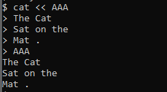
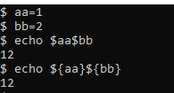
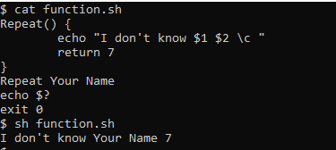
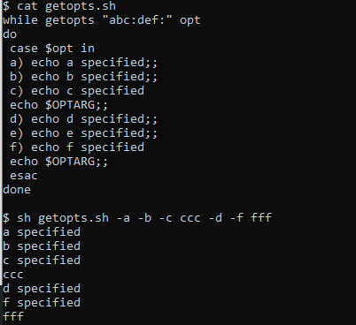
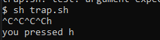

Philipp Moritzer - 21170004
Three standard files
Redirection Operator
$ cat << AAA
The Cat
Sat on the
Mat .
AAA # end string

$ find / -name "*.txt" > out.txt 2> err.txt # error output to err.txt, nomral output to out.txt
$ Lines=`wc -l textFile`
$ a=`expr $a +1`
$ Lines="$(wc -l textFile)" # does not work at sh

$ a=5 # sets a variable to 5
$ export a # makes a a env variable
$ export b=7 # define new env variable
$ echo $a # prints a result (5)
$ set # shows all shell variables
$ env # shows all environment variables
$ set | grep PATH # show location of PATH variable
Repeat() {
echo -n "I don't know $1 $2"
return 7
}
Repeat Your Name
echo $?
exit 0

scope() {
local lov=1 # local variable
glov=2 # global variable
echo local $lov global $glov
}
scope
echo local $lov global $glov
Output:
´local 1 global 2´
´local global 2´
. ./scope.sh # read from scope.sh
scope # function call
while getopts "abc:def" opt
do
case $opt in
a) echo a specified::
b) echo b specified::
c) echo c specified
echo $OPTARG;;
d) echo d specified::
e) echo e specified::
f) echo f specified
echo $ OPTARG::
esac
Done
$ sh getopts.sh -a -b -c cc -d -e -f ff
Output:

$ trap '' 2 # single quote, ignore ^c
trap '' 2
while [ 1 = 1 ]
do
read a
if [ $a = 'a' ]
then
exit
else
echo you pressed $a
fi
done
Output:

$ If [ -w writeFIle || -x writeFile ] # if file has writeable or executable permission statement will result in true
$ If [ -r writeFile && -s writeFile ] # true if file is readable and size is greater than 0
Arguments: